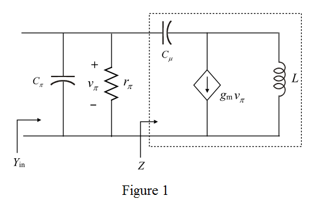
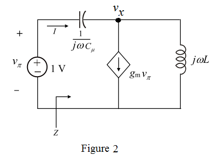

Draw the following small signal model for common emitter transistor amplifier loaded with an inductance L.

Determine the input admittance of circuit using Figure 1.
…… (1)
Apply test source of 1 V to determine the impedance Z in the circuit.
Draw the following circuit diagram to determine the impedance Z.

Apply Kirchhoff’s current law at node.
Substitute 1 V for.
Determine the expression of current I.
…… (2)
Substitute equation (2) in equation (1).
Therefore, the input admittance of the amplifier is proved.